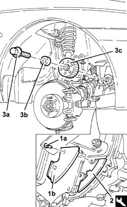
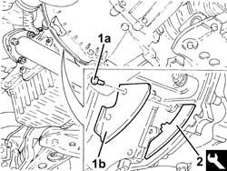
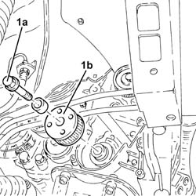
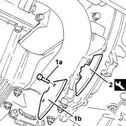
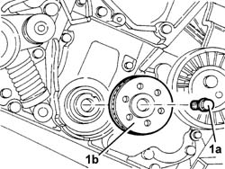

1032B44 toothed drive pulley - r + r with timing belt removed
- Path
- Procedures > 10 ENGINE > 1032 TIMING SYSTEM > 1032B belt timing system > 1032B44 toothed drive pulley - r + r with timing belt removed
- Kind
- repair procedure (removal / refitting; the operation number is the code)
- Applies to
- engines: 1.9 JTD 8v , 1.9 JTD 16v, 2.4 JTD 10v, 2.4 JTD 20v; all production periods
- Interactive page
- https://sloeber94.github.io/elrnDB-a156/en/#/3237765
Applies to: engines: 1.9 JTD 8v , 2.4 JTD 10v; all production periods
1. Undo the bolts (1a) and remove the guard (1b).
2. Fit the tool.
 | Name | Country |
|---|---|---|
2 | Counter-torque | 1.820.630.000 |
3. Undo the bolt (3a) and remove the spacer (3b) and drive pulley (3c).

Applies to: engines: 1.9 JTD 8v , 2.4 JTD 10v; all production periods
Fit the drive pulley and fix it with the spacer and bolt to the specified torque.
 | Fastening | Component | Ø | Value (daNm) |
|---|---|---|---|---|
- | Bolt with left hand thread | TOOTHED DRIVE PULLEY | M16 | 30.6 - 37.8 |
Remove the tool.
| Name | Country |
|---|---|---|
- | Counter-torque | 1.820.630.000 |
Fit the protection and bolt in place.
Applies to: engines: 1.9 JTD 16v; all production periods
 Removing
Removing
 Refitting
Refitting1. Undo the bolts (1a) and remove the flywheel shield cover (1b).
2. Fit the flywheel lock.
| Name | Country |
|---|---|---|
2 | Counter-torque | 1.860.846.001 |

Applies to: engines: 1.9 JTD 16v; all production periods
1. Undo the (left hand thread) bolt (1a) and remove the drive pulley (1b).

Applies to: engines: 1.9 JTD 16v; all production periods
Refitting
RemovingPlace the drive pulley back in its housing and secure it tightening the bolt to the recommended torque.
| Fastening | Component | Ø | Value (daNm) |
|---|---|---|---|---|
- | Bolt with left hand thread | TOOTHED DRIVE PULLEY | M12 | 323 357 |
Remove the flywheel lock.
| Name | Country |
|---|---|---|
- | Counter-torque | 1.860.846.001 |
Place the flywheel shield back in its housing and secure it using the bolts.
Applies to: engines: 2.4 JTD 20v; all production periods
Removing
Refitting1. Undo the bolts (1a) and remove the flywheel shield cover (1b).
2. Fit the flywheel lock.
| Name | Country |
|---|---|---|
2 | Counter-torque | 1.860.898.000 |

Applies to: engines: 2.4 JTD 20v; all production periods
1. Undo the (left hand thread) bolt (1a) and remove the drive pulley (1b) with spacer.

Applies to: engines: 2.4 JTD 20v; all production periods
Refitting
RemovingPlace the drive pulley back in its housing and secure it tightening the bolt to the recommended torque.
| Fastening | Component | Ø | Value (daNm) |
|---|---|---|---|---|
- | Bolt with left hand thread | TOOTHED DRIVE PULLEY | M16 | 30.6 ÷ 37.4 |
Remove the flywheel lock.
| Name | Country |
|---|---|---|
- | Counter-torque | 1.860.898.000 |
Place the flywheel shield back in its housing and secure it using the bolts.
Topics that link to this page (5)
- 1020D11 front crankshaft oil seal cover-r r and replace seal with timing belt removed-includes cleaning mating surfaces and applying sealant
- 1020D14 front crank shaft oil seal cover - r + r and replace seals for versions with oil pump on crank shaft, timing side
- 1020D18 front crank shaft cover oil seal - replace
- 1032B46 toothed drive pulley - r + r
- 1032B47 toothed drive pulley - r r for versions with air conditioner